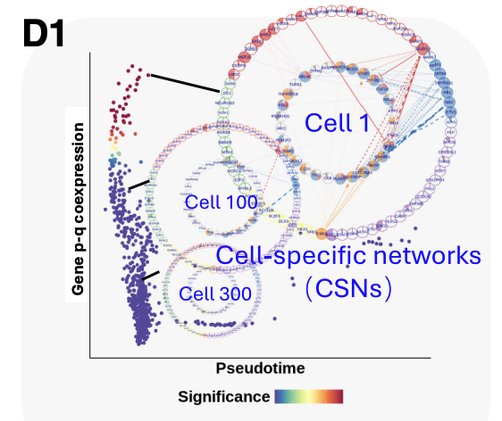
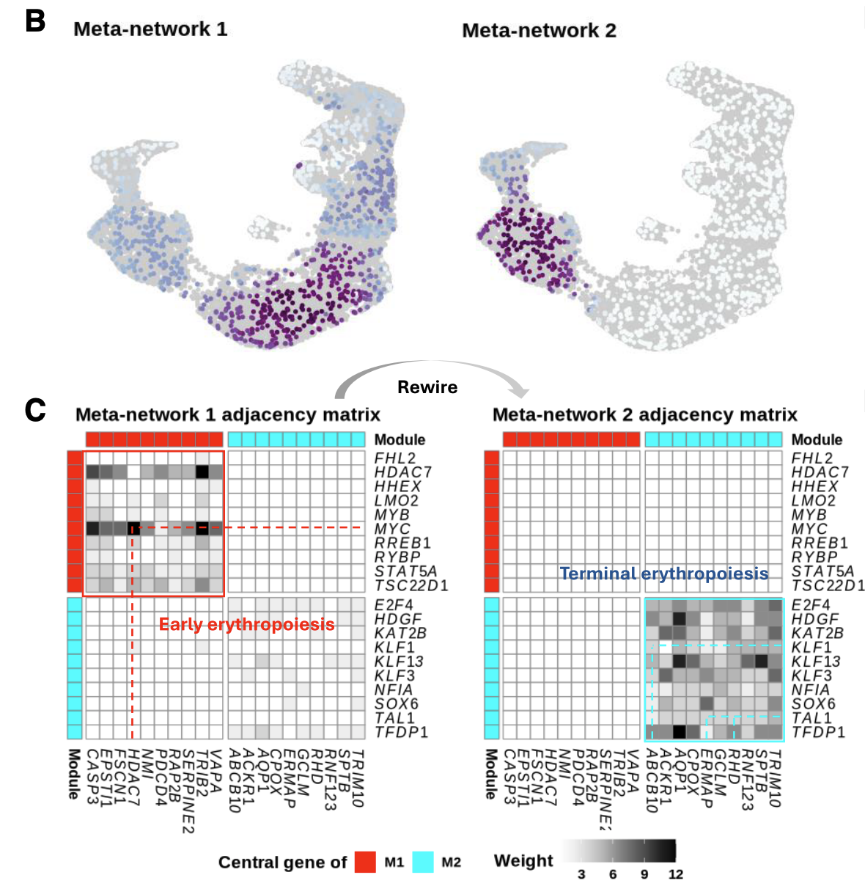
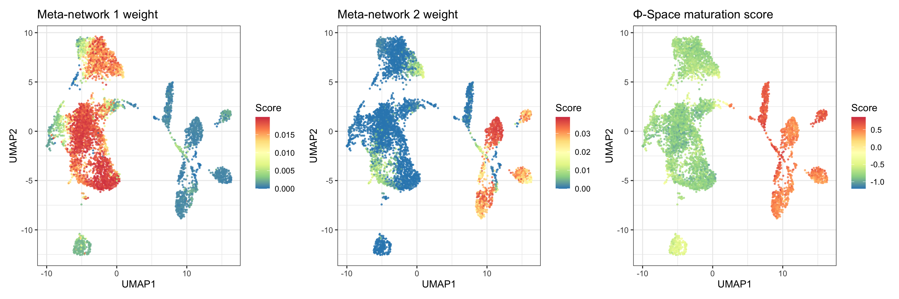
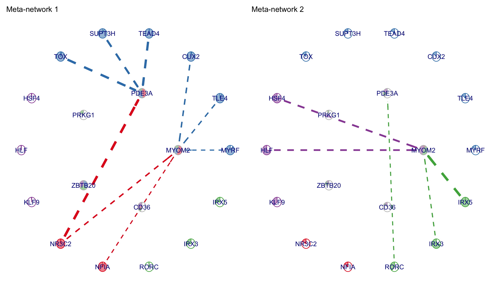
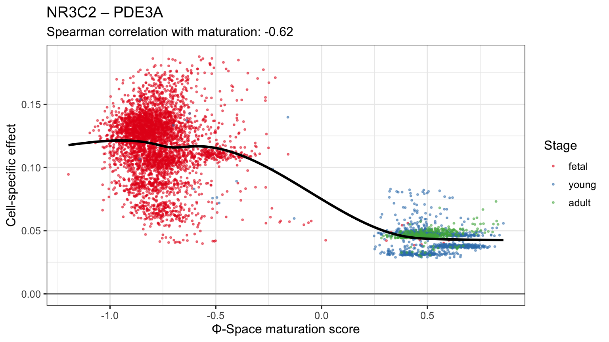

Modelling continuous cell states using scRNA-seq data · BiocAsia 2026
Open in RStudio
vignettes/03_nnet.Rmd
The rendered page is on the workshop website.
| Block | Time | Where |
|---|---|---|
| From gene levels to gene relationships | 10 min | slides |
| Choose genes, run NeighbourNet | 10 min | RStudio |
| Read the networks | 25 min | RStudio + slides |
| Recap and workshop wrap-up | 5 min | slides |
From gene levels to gene relationships
Modules 1 and 2 described where each cardiomyocyte is along maturation.
Module 3 asks: as cardiomyocytes mature, do the relationships between genes change?
Co-expression is not regulation
A gene regulatory network (GRN) claims that one factor causes changes in another. Single-cell RNA-seq alone cannot show that. We build co-expression networks: TFs and target genes that vary together. The edges are hypotheses, not proof.

effect[target, TF, cell].
Maturation axis: the Φ-Space score = mean(young, middle, old) − fetal, from Module 1. It needs no trajectory model and agrees with Module 2’s pseudotimes (ρ ≈ 0.8).
PhiSpace::rankFeatures()); keep the top 10.Exercise 1
Do the 10 genes rise or fall with maturation? Which ones are missing from the target prior?
In RStudio
Run to inspect-nnet. The result is cached, so it loads in seconds.

Meta-network 1 is the foetal pattern (ρ = −0.72 with the maturation score); meta-network 2 the post-natal pattern (ρ = +0.62).

R/nnet_viz.R draws the same networks with visNetwork:
Exercise 2

NR3C2–PDE3A, the strongest edge of meta-network 1, is strong in foetal-like cells and weak after birth (ρ = −0.62).
Exercise 3
Compare the networks of the most foetal-like and the most adult-like cell (lowest and highest maturation score).
| cell | donor | edges above the cutoff |
|---|---|---|
| most foetal-like | foetal | TOX → PDE3A |
| most adult-like | young | KLF9 → PDE3A, HSF4 → MYOM2, KLF9 → ZBTB20 |
Exercise 5: edge cutoff
Redraw meta-network 1 with cutoff = 0.5 and 0.99. Which edges survive?
Exercise 6: more target genes
Re-run with the top 20 genes (~40 s, 1 GB). Do the meta-networks still track maturation?
Not covered: receptor.activity(), upstream signalling. See the NeighbourNet cell-cycle vignette.
| Module | Question | Method | Output per cell |
|---|---|---|---|
| 1 | What does each cell resemble? | Φ-Space | a score per phenotype |
| 2 | Where is each cell along maturation? | slingshot, DPT | a pseudotime |
| 3 | Which gene relationships change? | NeighbourNet | a network |
All three keep the gradient that a single cluster label would throw away.
Module 3 · NeighbourNet · workshop website